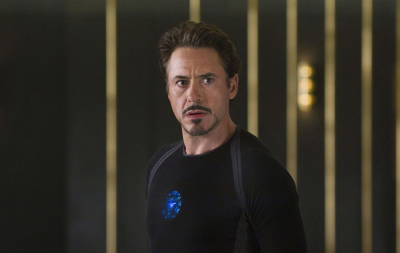

托尼斯塔克
安东尼·爱德华·史塔克
英文名：Anthony Edward Stark
别称钢铁侠
是基于同名漫威漫画角色，在漫威电影宇宙（MCU）系列电影中由小罗伯特·唐尼饰演的角色。
电影中，托尼·史塔克是一名企业家、天才发明家兼极度自恋的花花公子，担任史塔克工业首席执行官
。他在电影最初作为美军的主要武器供应商，随后，为了保卫世界和平，运用其技术知识发展动力服。
截至2019年，这个角色曾在十部系列电影中登场，是漫威电影宇宙的核心人物之一，为了击败灭霸而使用无限宝石牺牲自己，弹指把灭霸大军消灭。
登场电影
- 2008年，一部改编自钢铁侠漫画的电影上映，由饰演托尼·史塔克的小罗伯特·唐尼主演、乔恩·法夫罗执导。
- 2008年,电影《无敌浩克》再度现身，
- 2010年,又出演于《钢铁侠2》
- 2012年,《复仇者联盟》
- 2013年,《钢铁侠3》
- 2015年,《复仇者联盟2：奥创纪元》
- 2016年《美国队长3》
- 2017年《蜘蛛侠：英雄归来》
- 2018年《复仇者联盟3：无限战争》
- 2019年《复仇者联盟4：终局之战
主要事件
- 《钢铁侠2》中，史塔克致力于从政府手中夺回他所拥有的技术。
- 《复仇者联盟》中共同抵御由邪神洛基领军的外星人入侵地球。
- 《钢铁侠3》中，史塔克因为在《复仇者联盟》历经死亡边缘，长期饱受创伤后心理压力症所苦。
- 《复仇者联盟2：奥创纪元》中，史塔克成为了复仇者们的恩人。
- 《蜘蛛侠：英雄归来》中，史塔克成为彼得·帕克的导师并创立损害控制公司。
- 《复仇者联盟4：终局之战》中与小辣椒·波兹结婚生下女儿摩根·史塔克，最终为了击败灭霸使用结合六颗无限宝石所制作的奈米装甲手套(NanoGauntlet)，但因宝石的冲击太大（因六颗无限宝石会释放大量伽马射线）而牺牲自己。
| 人物相关 |
| 首现 |
《钢铁侠》（2008年） |
| 作者 |
斯坦·李 |
| 演员 |
小罗伯特·唐尼 |
| 全名 |
安东尼·爱德华·史塔克 |
| 昵称 |
钢铁侠 |
| 职业 |
超级英雄 |
| 父亲 |
霍华·史塔克 |
| 母亲 |
玛丽雅·史塔克 |
| 配偶 |
小辣椒·波兹 |
| 儿女 |
摩根·史塔克 |
| 国籍 |
美国 |
照片

经典语录
- 你可以说拥有一切，也可以说一无所有。
- 只有你的棍子比别人粗，才能保卫和平。
- 我不能死，我要活着，因为只有活着我才能赎罪。
- 是令人恐惧，还是令人尊敬，我想二者兼顾。
- 有时候做事必须有超前意识。
- 贾维斯，在我们学会走之前，要先学会跑！
- 'm the Iron Man.
- 今天就是你余生的第一天。
- 我更喜欢只需要动用一次的武器。
- 我不能一直蒙着脸，不让世人欣赏这一切。
- 情况不一样了，我必须要保护我唯一离不了的人，那就是你。
- 你上当了，我看你也没多大能耐。
- 有一件事你无法改变，我是：钢铁侠。
- 人人都爱斯塔克，人人都想从他那得到点儿什么